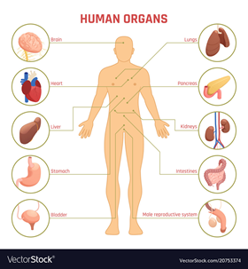
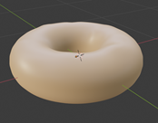
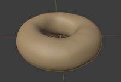
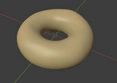

Week 2 - Design & Blender
In week 2, we continued through phase 2 (design) and progressed through phase 3 (blender). Vansh was assigned to expand upon his classroom lesson, since we came to a mutual agreement that his lesson was the most suited for the short time period of our project. Other members progressed through a Blender crash-course and designed donuts using the application.
Lesson: Human Anatomy (extended) - Vansh & Beverly The 8-12 year old students would each have a diagram of a human body in front of them which they can only see, featuring arrows pointing to some of the major organs such as ears, skin, heart, lungs, liver, kidneys, intestines and stomach. There are multiple approaches in which they can learn, first, by watching a short video about the human organs[1], and second, by reading information cards located around the room which describes the organ and what it does. For example, if it is the heart, they would see the heartbeat and see how blood is moved around the body or the liver removing toxins from the body.
They are then prompted to test their knowledge by playing a minigame designed by our team. Inspired by Figure 5, there will be a diagram of a human body floating at eye level, with arrows pointing to different locations of the body. The student will drag floating objects that have been modeled by our team to replicate different organs to their respective labels. When done, the student can check their answer by pressing the ‘submit’ button and the world will indicate if the answers are right or wrong.
Figure 5 -Labeled diagram of the locations of the human organs
Each member of our team will individually design a different organ for the minigame. Below, (Table 1) shows which member is designing what organ. Table 1-Group members and the organs they are designing
| Dante | Lungs |
|---|---|
| Vansh | Liver |
| Eric | Stomach |
| Kaylyn | Bladder |
| Beverly | Brain |
| Alisa | Heart |
| Charles | Pancreas |
Blender: Crash Course - Everyone We all collaboratively worked through the following Blender tutorial during one of our Monday tutorial classes.
Below shows screenshots of some members' final products from the crash course, these small scale models are a leeway into creating models for the classroom.
  